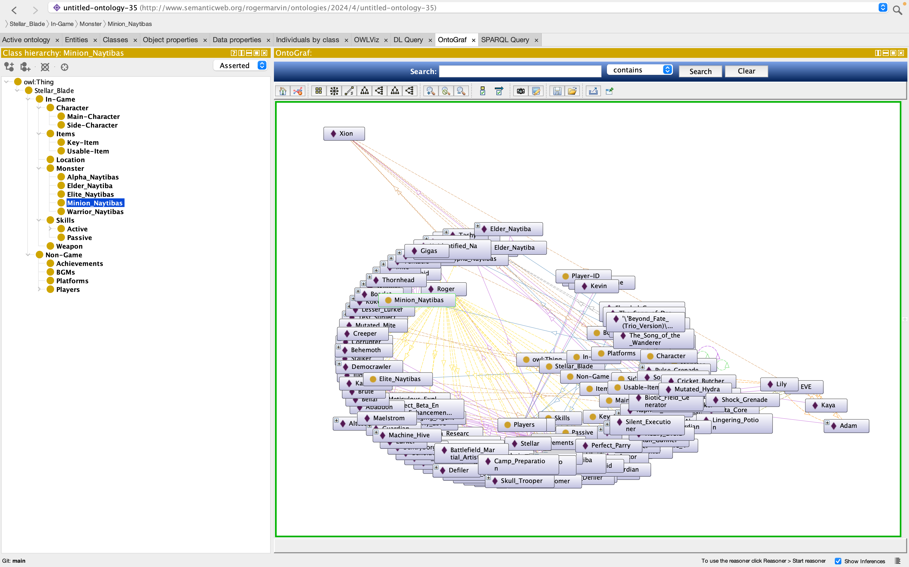
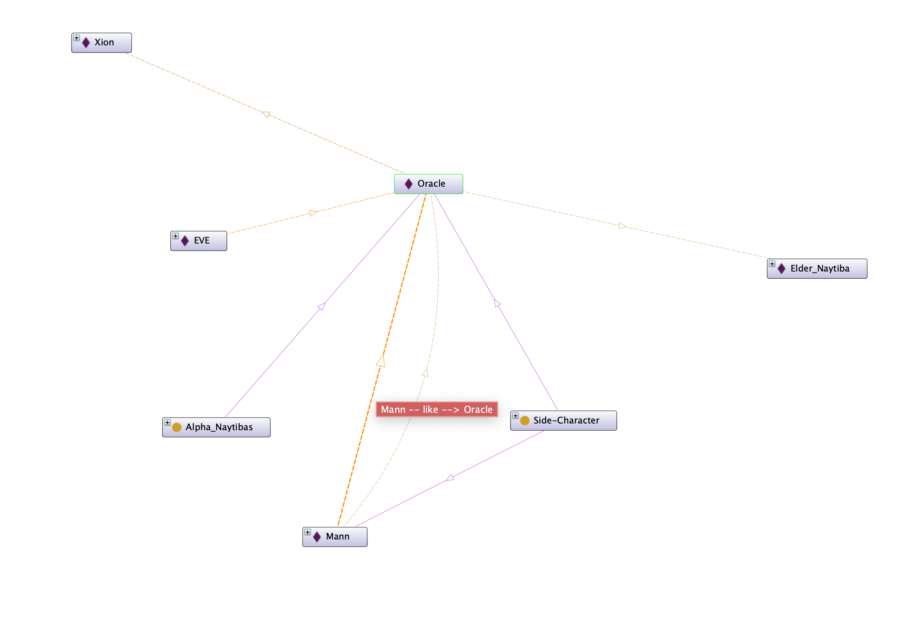
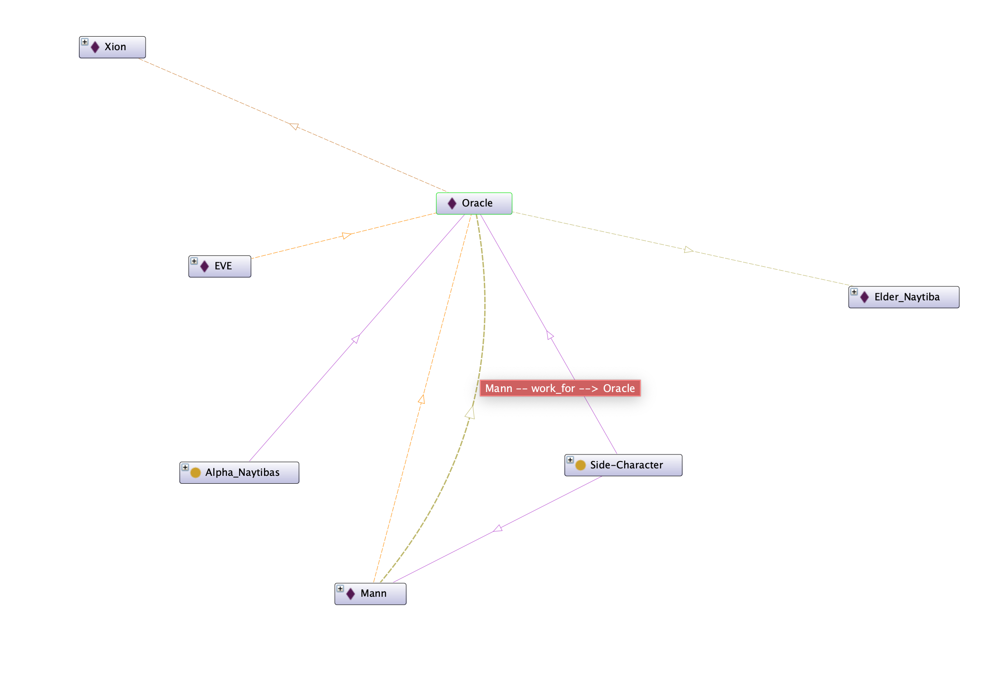
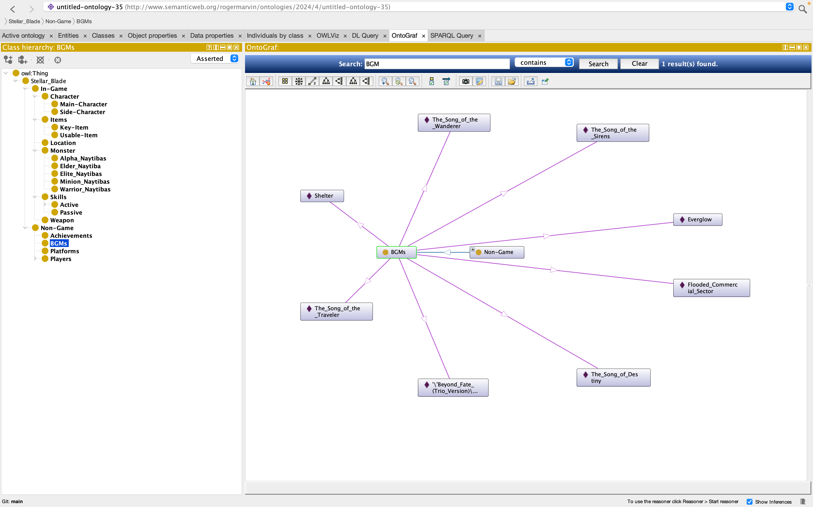
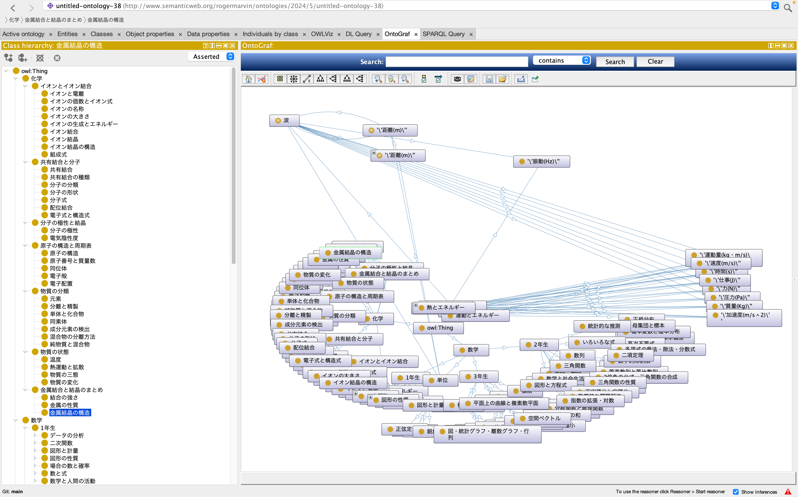
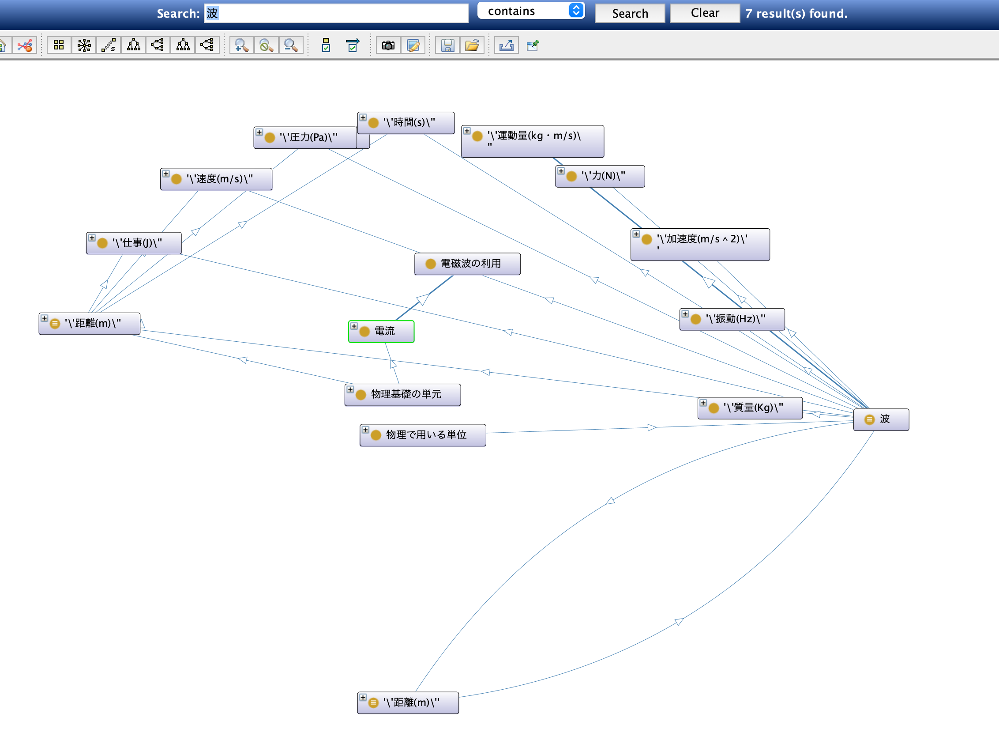
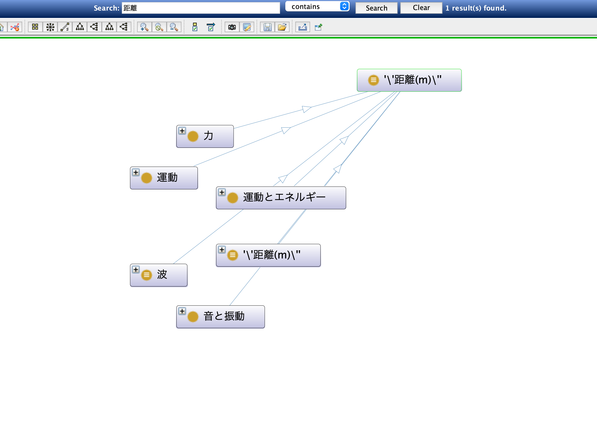
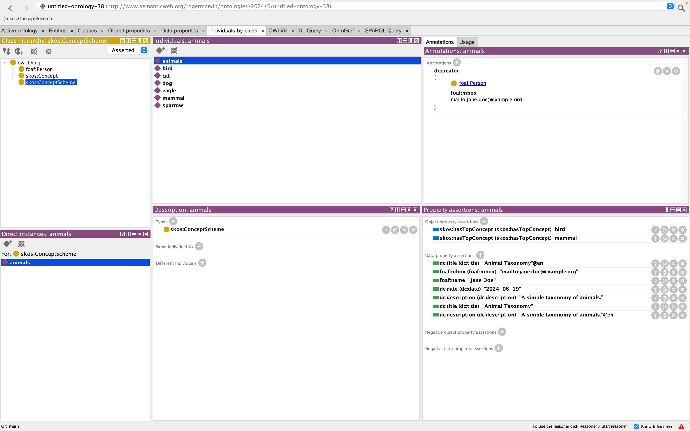
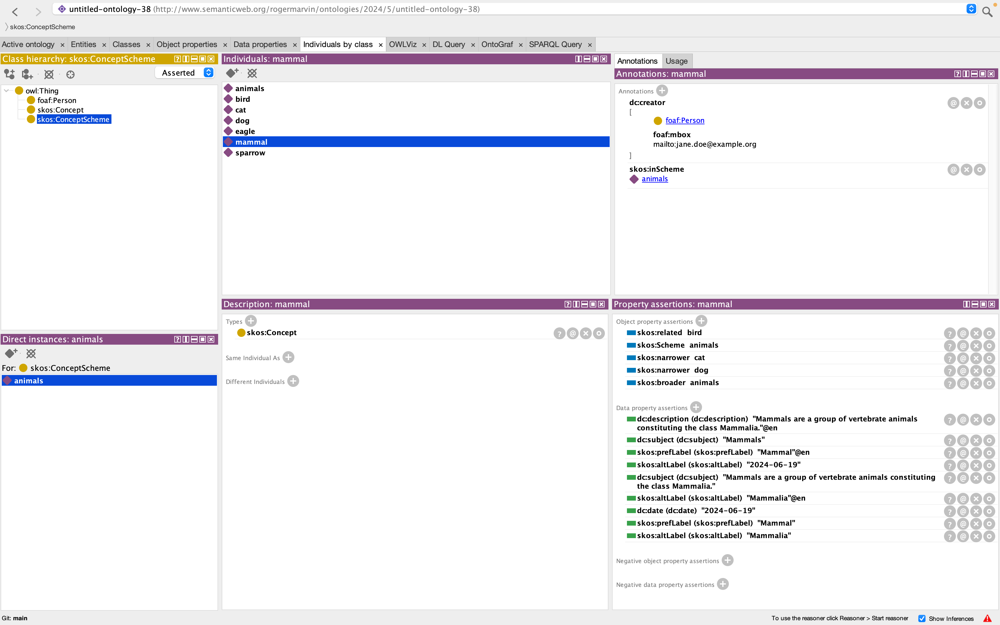
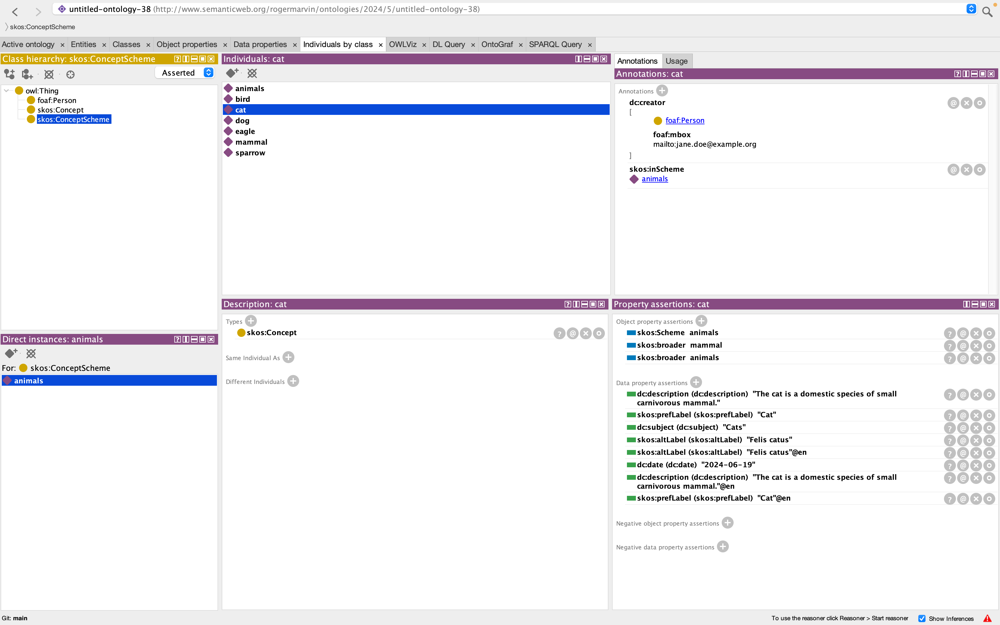

| クラス | 学籍番号 | 氏 名 |
|---|---|---|
| A | 20122077 | Roger Marvin |
AI実習2024A課題レポート(学籍番号)(学生氏名).md マークダウン記法とは？ Markdown 記法～基礎編～ マークダウン記法一覧 マークダウンの書き方
[^2]: (https://qiita.com/miriwo/items/28d80f46c857de49f34b) Markdown 記法～基礎編～ [^3]: (https://www.sejuku.net/blog/77398)マークダウン記法一覧 [^4]: (https://backlog.com/ja/blog/how-to-write-markdown/)マークダウンの書き方
<!-- 要 記述 回答 --> と記されている箇所は忘れずに適切な記述を加筆するOWL/XML Syntax 形式で、file名.owl として保存するRDF/XML Syntax 形式で、file名.owl と保存する Sparqlのクエリコードを ```sql と ``` で囲み、クエリの実行結果も ``` ``` で囲む
2 学年 4 学期のAPI 実習と同じ方法
Github のアカウントを作成し、Practice-AI-2024 という名称でプライベートリポジトリを作成
そのプライベートリポジトリに、指導員の Github アカウント= keythriveを招待する
Github のプライベートリポジトリに次の名前で、6 つフォルダを用意する：
Github のアカウント名、プライベートリポジトリ作成、6 つのフォルダをつくったか？招待を完了したか？について、FORMS アンケートするので必ず回答すること。
FORMS アンケートはこちら：
FORMS アンケートに未回答の場合、レポートを取得する方法が確立しないので、必ず回答のうえレポート提出可能な状態にすること
それぞれの提出期限までに、必要なファイル一式を当該フォルダにアップロードしておく
〆切時刻を過ぎた時点で自動的に, 全員の Github プライベートリポジトリから、git cloneなどでファイルを一括ダウンロードする
提出が遅れるとダウンロードできず、未提出と判断される
真に止むを得ない事由で、提出期限が遅れる場合、事前にメールにて連絡・相談すること:
mailto: horikawa.keitaro@kaishi-pu.ac.jp
事前連絡なしに、期限を過ぎた場合、その課題レポートは未提出として採点しない
Github のアカウント登録、プライベートリポジトリ、ファイルアップロードが不明な場合は、必ず事前に確認・相談するか、すでに出来ている友達から教えてもらうこと
| 回数 | グループ名 | 発表者 | 発表内容 | 発表への質疑・コメント |
|---|---|---|---|---|
| 7 | 明鏡止水 | Roger Marvin | 発表はゲームのオントロジーを作り出しました。オントロジーでは二つにわかえれて、InーGameとOut-Gameのクラスに分かれています。In-gameの中ではCharacter,Weapon,Items,Location,Monster,Skills。一方、Out-GameではAchievement, BGMs, Platforms, Playersがあります。In-gameはゲームの中でストリー的なものまたは、キャラの視点からのものです。一方、Out-Gameはプレイヤー視点からのものです。 | 質問いくつあります。まず、In-gameとOut-gameの区別です。それにtしての答えは、視点です。In-gameはキャラの視点からのものとOut-gameはプレイヤーからの視点です。次は「なぜBGMsはin-gameじゃないですか。そのとき、私の答えは「In-gameかもしれません」ですが、よく考えると、やはり、BGMはプレイヤーが感じたもので、キャラの視点と関係ないし、BGMsを聞こえるはプレイヤーだけです。そのために、BGMsはOut-Gameに入ります。 |
| 7 | 四海同胞 | 大竹 啓之 | 動画編集に関してのオントロジーを作りました。ThumbnailやTitleやGenreにはアニメやVlogというクラスに入っています。編集のクラスではZoom-In、ZoomーOut、とColorーAdjustmentがあります。 | このオントロジーは動画編集の要素をシステマティックに整理していてすごいですね！ThumbnailやTitle、Genreという要素をアニメやVlogという具体的なクラスに分類するアイデアは、分類と可視化を容易にします。また、編集のクラスにZoom-InやZoom-Out、Color-Adjustmentという具体的な操作を含めることで、編集の技法やスタイルをより具体的に捉えることができるでしょう。これにより、動画制作のプロセスを理解しやすくし、効果的な編集を行うための指針を提供できると思います。 |
| 7 | 百折不撓 | 平栗 颯萌,小林 相太 | スプラトゥーンのシューターに関して、これまでサブとメインのウェポンの関係性のみを分析していましたが、今後はインクの消費量や射程距離も追加して考察を進めたいと思います。あまた、サッカーのポジションやフォーメーション、戦術に基づいて、フォーメーションと戦術の関係性についても詳しく書いていきたいです。具体的には、攻撃的戦術と防御的戦術の両面について発表しています。 | よかったです！新たにインクの消費量や射程距離を考慮に入れることで、より詳細な分析が可能になりますね。特にSplatoonではウェポンの特性が戦術やプレイスタイルに大きな影響を与えるため、これらの要素を加えることでより深い洞察が得られるでしょう。一方、サッカーのフォーメーションと戦術についての考察も興味深いですね。攻撃的戦術と防御的戦術の両面をバランス良く取り上げることで、どのようにフォーメーションが戦術の遂行に影響するのかを深く理解できるでしょう。 |
| 7 | 猪突猛進 | 山崎 秀晃 | このチームは艦隊コレクションについてのオントロジーを発表しています。キャラ名、船の型、ステージの海域名、装備、任務についてクラスがあります。例えば、三日月というキャラについては、艦隊が持っているステータス、ボイス、小話などを含めます。ステージに関しては、そのステージで手に入るキャラやおすすめの編成、すごろくにおける方向の確率なども考慮すると説明しました。 | このオントロジーは艦隊コレクションの理解に役立ちそうですね。キャラ名、船の型、ステージの海域名、装備、任務など、それぞれが独自のクラスとして整理されている点が特に素晴らしいです。ステージに関しても、そのステージで手に入るキャラクターやおすすめの編成、すごろくにおける方向の確率などが考慮されているとのことで、プレイヤーは戦略を練る際に役立つ情報を得ることができるでしょう。このような詳細なオントロジーがあれば、ゲームの新たな視点や戦術を発見することができ、ゲームコミュニティ全体にとっても有益な資源になると思います！ |
| 7 | 和気藹藹 | 加藤 颯士,齋藤 杏祐 | このチームは２つのオントロジーを作りました。それはバズリズムとテラリアというゲームです。バズリズムの出演者についてのクラスを作成する際、開催年ごとに分類します。クラスには主催者や開催場所の情報を含め、オブジェクトとして2dayや3dayのイベントを扱います。さらに、各アーティストがどの年のどの日に出演したかを関連付けます。一方、テラリアというゲームにおいては、武器に焦点を当ててクラスを作成します。武器の種類をクラスにまとめ、それぞれのインスタンスには固有の武器名と振る速度を含めます。 | このチームの取り組みはとても面白いです。バズリズムとテラリアという異なるゲームに対してそれぞれオントロジーを作成するアプローチが素晴らしいです。バズリズムの場合、出演者に焦点を当てたクラスを作成し、その出演者を開催年ごとに分類するのは、イベントの歴史や出演者の情報を整理するのに役立つでしょう。また、2dayや3dayのイベントというオブジェクトを扱うことで、イベントの形式や期間に応じた情報を効果的に管理できる点も大変良いですね。一方、テラリアでは武器に焦点を当ててクラスを作成するアプローチを取っていますね。武器の種類をクラスにまとめ、それぞれのインスタンスには武器名と振る速度といった特性を含めることで、プレイヤーがゲーム内の武器に関する情報を効率的に参照できるようになります。 |
| 7 | 自由闊達 | 倉石 大暉 | 倉石くんはプログラミング言語のオントロジーについて発表しました。プログラミング言語のオントロジーを作成する際、言語やオブジェクトをクラスとして定義すると説明しました。例えば、Pythonの言語はそのインスタンスの一例となります。また、異なる言語間の互換性についても考慮して作成します。 | 倉石くんのプログラミング言語のオントロジーに関する発表は良いです。プログラミング言語をクラスとして定義し、その中に各言語をインスタンスとして位置付けるアプローチは、言語の特性や使い方を体系化するのにとてもに便利です。 |
| 回数 | グループ名 | 発表者 | 発表内容 | 発表への質疑・コメント |
|---|---|---|---|---|
| 8 | 明鏡止水 | Roger Marvin | 私は教育に関する科目のオントロジーを作りました。教育に関する数学、物理、化学を単位でつなげることを考えると、メートル（M）という共通の単位を使うことで関連づけることができますが、具体的な事例はそれほど多くないかもしれません。しかし、微分を用いることでそれぞれの分野のつながりを作り出すことができると思います。 | 教育科目のオントロジー作成は素晴らしいアイデアです。数学、物理、化学などをメートル（m）という共通の単位で結びつけ、微分を使って各分野のつながりを明確に示します。こうすることで、異なる科目間の関係を視覚化し、学問の統合と理解を深めることができます |
| 8 | 四海同胞 | 大竹 啓之,阿部 一成 | このチームは水族館のオンとロジーを作りました。水族館にアクアマリンは生息地に基づいて展示を作成していいます。二つの水族館を利用してそれはサンシャインとマリンピア。サンシャインは生息地・種類・行動分類に基づいて展示を行っています。一方、マリンピアは展示ゾーンを作成し、その中でマイワシに注目しています。それぞれの水族館で分類方法や展示ゾーンが異なりますが、これらを1つに統合することで、同じマイワシが展示されていることがわかるようにすることができると説明されました。 | このチームのアプローチはいいですね。水族館のオントロジーを作成することで、異なる水族館での展示方法や分類基準を明確にし、訪問者が展示されている生物の情報を簡単に理解できるようにしていますね。このようなアプローチで、水族館の管理や展示企画においても非常に役立ちます。訪問者にとって分かりやすく、また教育的な体験を提供するために重要な役割を果たしていますね。 |
| 8 | 百折不撓 | 安達 萌衣,小林 相太 | このチームは動物園のオントロジーを作りました。発表した動物園では、動物の種類を共通の分類基準で分けていますが、ゾーンごとに分ける方法も採用しています。この分類方法を活用すると、日本シカがどの動物園にいるのかがわかるようになります。また、科ごとに分類している例もあり、たとえばフクロウがいる場合、旭山動物園の鳥類ゾーンにまとめることができるとわかります。 | このチームの動物園のオントロジー作成はとてもいいです。動物の種類を共通の分類基準で分けるだけでなく、ゾーンごとにも分類する方法を採用している点が特に注目されます。これにより、訪問者はどの動物園にどの動物がいるのかを簡単に把握できるようになると思います。動物園の管理や訪問者の体験を向上させるだけでなく、教育的な観点からも価値があります。 |
| 8 | 猪突猛進 | 山崎 秀晃,山口 翔太,相場 陸 | このチームはファストフードについてのオントロジーを作りました。ファストフード店のハンバーガー店、バーガーキング、マクドナルド、モスバーガーのサイドメニューを統合しました。これにより、各店舗のサイドメニューを比較して好みのものを選びやすくなります。統合オントロジーとして活用することで、類似した商品を関連づけ、他の店舗でも注文する際の参考にすることができます。 | このチームのファストフードに関するオントロジーは、人にとってとても便利で役立つものです。ハンバーガー店、バーガーキング、マクドナルド、モスバーガーのサイドメニューを統合することで、各店舗のメニューを比較しやすくし、好みに合った選択がしやすくなります。人の利便性向上だけでなく、市場調査や競争分析にも役立つでしょう。各ファストフードチェーンのメニューの違いや類似点を明確に示すことで、業界内での位置づけや戦略立案にも貢献します。 |
| 8 | 和気藹藹 | 溝口 将太,加藤 颯士 | このチームはコンビニのオントロジーを作りました。ローソン、セブンイレブン、ファミリーマートの3つのコンビニの各オリジナル製品をピックアップしました。これを使うことで、コンビニが好きな人がオリジナル商品を食べたいときに「お菓子」と検索すると、その店にオリジナル商品があるかどうかが分かるようになります。これからは、値段で調べるとオリジナル商品が出てくるようにしたいと考えている。 | このチームのコンビニのオントロジーがあれば、とても便利です。ローソン、セブンイレブン、ファミリーマートの各コンビニのオリジナル製品をピックアップし、カテゴリーごとに整理することで、例えば「お菓子」といったカテゴリーで検索すると、それぞれの店舗がどのようなオリジナル商品を提供しているかがすぐにわかるようになります。特に、価格で検索するとオリジナル商品が表示されるようにするという提案はめちゃいいと思います。予算内で好みのオリジナル商品を容易に見つけることができます。 |
| 8 | 自由闊達 | 駒木根 通元,倉石 大暉 | このチームはコーヒーショップのオントロジーを作りました。コーヒーショップの情報を作成し、スターバックス、ドトール、タリーズに分けました。現在はまだ統合しただけで、横のつながりができていません。これから横のつながりを作っていきたいと考えている。 | このチームのコーヒーショップのオントロジーはいいです。スターバックス、ドトール、タリーズなどの各コーヒーショップの情報をまとめ、現在はそれぞれを個別に統合した状態ですが、次はこれらの間の関連性や比較ができるように横のつながりを強化していきたいとのことですね。コーヒーショップの運営やマーケティング戦略を最適化するための重要なツールとして活用できると期待されます。 |
| 回数 | グループ名 | 発表者 | 発表内容 | 発表への質疑・コメント |
|---|---|---|---|---|
| 9 | 明鏡止水 | Roger Marvin | 今回ではSkos、Foaf、DCを利用して、動物分類のオントロジーを作りました。動物の分類では、鳥類と哺乳類を作成し、それぞれの動物の名前を書きました。クラスとしては「猫」や「犬」といった具体的な動物名と、「アニマル」といった概念を設定しました。鳥類については「鷲」と「鳥」というふうに分けて考え、その関係を表すプロパティを班で共有して参考にしました。 | 簡単に説明できて、よかったです。また、質問したものに対して、チームと調べ上で、簡単や理解やすいに説明できました。 |
| 9 | 四海同胞 | 竹田 勇斗,阿部 一成 | このチームは『スターレイル』というゲームのキャラのオントロジーを作りました。『スターレイル』の主人公について、3つの属性があります。オブジェクトプロパティとして、各属性を持つことや使用できる武器を示しています。データプロパティでは属性ごとに関連づけられており、炎、物理、虚数の属性から主人公であることがわかります。また、『アーマードコア』というゲームでは、キャラクターやクラスにコメントを付け、AC（機体）というクラスは形状別に分類しています。 | 『スターレイル』というゲームのキャラクターのオントロジーを作成したチームですね。属性に関連づけられたデータプロパティを使うことで、主人公が炎、物理、虚数の属性を持つことが分かるようになっているとのことですね。これにより、ゲーム内での役割や特性が明確になり、プレイヤーにとっても理解しやすくなるでしょう。また、『アーマードコア』というゲームでは、キャラクターやクラスにコメントを付け、AC（機体）というクラスを形状別に分類しているそうですね。これにより、ゲーム内での機体の特性や適性が把握しやすくなり、戦略の立てやすさが増えます。 |
| 9 | 百折不撓 | 安達 萌衣 | このチームはK-popのオントロジーを作成しました。アーティストにはグループとメンバーが含まれ、楽器と曲のクラスも作成しています。メンバーのクラスには性別も含まれており、すべてのメンバーは同じグループに関連付けられています。また、一部のメンバーは曲を作成しているため、そのメンバーは別途分類しました。 | このチームはK-popのオントロジーを作成したんですね。アーティストにはグループとメンバーが含まれており、さらに楽器や曲といったクラスも設けられているとのことですね。メンバーのクラスには性別も含まれており、それぞれのメンバーが同じグループに関連付けられているということですね。また、曲の作成に携わる一部のメンバーは別途分類されているそうですね。このオントロジーはK-popのグループやメンバーの関係性を明確に捉え、さらに各メンバーの特性や役割、楽曲制作における貢献度を記述するのに役立ちます。 |
| 9 | 猪突猛進 | 山崎 秀晃,山口 翔太 | このチームは今回バーガーキングとスプラトゥーンというゲームに関してのオントロジーを作りました。バーガーキングの名称を入力し、それぞれにコメントで説明を追加しました。しかし、データプロパティとして名称を追加する時間が足りず、主語と述語が書けていません。同様に、スプラトゥーンに関する情報も作成し、武器や射程を記述しましたが、関係についてはまだ記述できていません。 | このチームはバーガーキングとSplatoonに関するオントロジーを作成したようですね。バーガーキングに関しては名称を入力し、それぞれにコメントで説明を追加したとのことですが、データプロパティとして名称を追加する時間が足りず、主語と述語が書けていないということです。Splatoonに関しては、武器や射程についての情報を記述したとのことですが、関係についての記述がまだ完了していないようですね。 |
| 9 | 和気藹藹 | 臼田 誠,加藤 颯士 | このチームは小説のオントロジーを作成しました。クラスにはジャンルと作者名が含まれます。例えば、ホラー小説はミステリーのジャンルに含まれます。オブジェクトプロパティには著者、出版社、出版言語などが含まれます。データプロパティでは使用言語や著者の出版歴などを記述します。コメントには作品のあらすじを記載し、少年ジャンプに連載された作品に関するオントロジも作成します。このオントロジでは、他の小説や似たようなジャンルや作者に関する情報も探索できます。 | 作品のあらすじをコメントに記載することで、各小説の内容が理解しやすくなり、読者や研究者にとって役立つ情報となるでしょう。特に少年ジャンプなどの連載作品に関しては、それぞれの特性やストーリー展開について詳細なオントロジーが作成されることで、ファンや研究者が作品の探索や比較を行いやすくなりますね。異なる小説やジャンル、そして著者に関する情報を組織化し、関連付けることで、文学の理解と探求を深める手助けなると思います。 |
| 9 | 自由闊達 | 駒木根 通元 | このチームはApex Legendというゲームのオントロジーを作りました。Apex Legendsのキャラクターの関係性について、性別と経歴を含むクラスを作成しました。各キャラクターは個別の名前を持ち、オブジェクトプロパティにはジェンダーや好み（好きか嫌いか）も記述します。さらに、フレンドという関係も追加し、家族関係なども考慮しています。データプロパティには年齢や名前（名、姓）、敵対関係を表すenemyなどが含まれています。 | Apex Legendsのような多人数参加型ゲームでは、キャラクター間の関係性や背景が重要な要素となります。このようなオントロジーは、プレイヤーにとって楽しさや戦略の深さを加えるとともに、ゲーム開発者やストーリーテラーにとってもキャラクターの設計と物語の構築を支援する貴重なツールとなると思います。 |

 





 